import math
import numpy as np
# Lake model parameters, number of years simulated, and number of samples generated
q = 2
b = 0.42
alpha = 0.4
delta = 0.98
mu = 0.03
sigma = np.sqrt(10**(-5.0))
lake0 = 0
nYears = 100
nSamples = 100Lab 6: Implementing Direct Policy Search
Overview
Today we’re going to compare open loop intertemporal and closed loop (via direct policy search with a radial basis function) optimization. This lab replicates and adapts various analyses in Quinn, J.D., Reed, P.M., Keller, K. (2017). Direct policy search for robust multi-objective management of deeply uncertain socio-ecological tipping points. Environmental Modelling & Software 92, 125-141.
Today’s objectives:
- Learn about Pareto optimal strategies for the simple lake problem obtained using the open loop and closed loop approaches
- Evaluate and explain the solution dynamics from various strategies from both approaches
- Calculate performance metrics for different strategies
- Demonstrate your conceptual understanding of dynamic planning and how it relates to robustness
- Describe how you could incorporate dynamic planning into your decision analysis
Lab Workflow
Repository Setup
You can call the repository dps_lab/.
If you need a reminder on how to set up your project directory and create a GitHub repository, check the workflow and directory structure from lab 2.
You can directly export these lab instructions as a .ipynb file (look at the top right of the page). I put this file file directly under my dps_lab/ dps directory. If you organize your directory different, please update relative filepaths in the code below accordingly.
Environment Setup
Environment wise, you can use the one we set up for the previous lab.
Be sure to include instructions in your README.md about how others can prepare the computational environment to run your notebook.
Our Analysis
Make sure your environment is set up and active to run the code cells below.
Revised lake problem overview
Quinn et al., (2017) share the general concept of our problem statement in Lab 4 but introduce a different representation of system dynamics, new planning objectives, and new policy search approaches.
Due to ongoing economic activity, a town emits phosphorous into a shallow lake (with a concentration of \(a_t\)), which also receives non-point source runoff (concentration \(y_t\)) from the surrounding area. The concentration of the lake at time \(t+1\) is given by \[X_{t+1} = X_t + a_t + y_t + \frac{X_t^q}{1+X_t^q} - bX_t,\]
where:
| Parameter | Value |
|---|---|
| \(a_t\) | point-source phosphorous concentration from the town |
| \(y_t\) | non-point-source phosphorous concentration |
| \(q\) | rate at which phosphorous is recycled from sediment |
| \(b\) | rate at which phosphorous leaves the lake |
and \(X_0 = 0\), \(y_t \sim LogNormal(\log(0.03), 0.25)\), \(q=2.5\), and \(b=0.4\).
The goal of the optimization is to meet several objectices:
| Objective | Description | Preference |
|---|---|---|
| Economic Benefits | Discounted economic benefits, assumed proportional to discounted P emissions | Max |
| Lake P Concentration | Measure of the lake quality, where lower P concentrations correspond to clearer lakes | Min |
| Policy Inertia | Measure of the stability of the control policy, where stable policies are favored | Max |
| Reliability | Percentage of simulations that the lake P concentration is below the critical P threshold | Max |
Please consult Section 3.1 of the paper to see the mathematical formulation of the objectives.
Non-linear dynamics in the shallow lake problem
Let’s take a closer look at the non-linear dynamics of the shallow lake problem.
Each time step, the P concentration in the lake changes due to a natural inflow (+), an anthropogenic contribution (+), P recycled from sediments (+), and losses of P through outflow or sediment absorption (-). The critical P threshold exists where natural P recycling exceeds natural P losses as a function of the current P level in the lake. The paper has this helpful figure that illustrates the dynamics and critical P thresholds as a function of changing parameter values that determine natural recycling and loss rates.
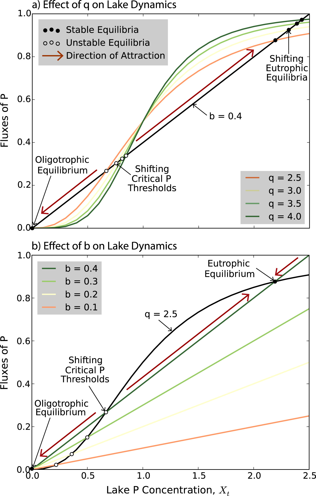
As posed in this and related studies, b & q are deeply uncertain parameters. In a given state of the world, we can calculate critical P by finding the roots (the values of X that make the equation equal to 0) of: \(\frac{X_t^q}{1+X_t^q} - bX_t\).
The intertemporal apporach will test out many possible combinations of \(a_t\) over 100 years. With enough training, this approach could find the sequences of \(a_t\) that are Pareto optimal and avoid the critical P threshold of the considered SOW. However, keep in mind that there are 100 decision variables! With \(.01 < a_t < .1, \forall t\), there are an infeasible number of candidate solutions to test.
In contrast, by using direct policy search with radial basis functions, we completely transform the decision space. Following Section 3.2.2, we now represent the decision levers as: \[ a_{t, i} = \min(\max(\sum_{j=1}^n w_j |\frac{X_{t,i} - c_j}{r_j}|^3, 0.01),0.1) \quad \forall {t, i} \]
This is a cubic radial basis function that parameterizes how to map P concentrations to P release decisions. \(c_j\), \(r_j\) and \(w_j\) are the centers, radii, and weights of n cubic radial basis functions. The decision variables are these \(3*n\) parameters, rather than the T decision variables in the intertemporal optimization. The authors used 2 radial basis functions in this study, so the DPS and intertemporal approaches consider 6 vs. 100 decision variables, respectively. The authors emphasize – and this is important! – that with the DPS approach, different P release decisions can be made in each of the N simulations (note the i indexing) because the decisions are informed by the lake P concentrations in a time step. We are searching for the values of \(c_1\), \(r_1\), \(w_1\), \(c_2\), \(r_2\), and \(w_2\).
In addition to evaluating open loop vs. closed loop strategies for their expected performance on objectives (and how robustly they do well on objectives across SOWs), we are going to pay close attention to how the various strategies act as the P level in the lake gets close to the critical P threshold in both the SOW the policy was trained on and in new SOWs.
Comparing Intertemporal and DPS
Instead of running the optimization (which takes a very long time), we are fortunate that we can directly use the reuslts from Quinn et al., (2017) due to their very well-formatted repository. Download the repo, which you can do here, and extract the data from the DataInPaper subdirectory. I created a subdirectory called data which is at the same level in the lab directory as my .ipynb file. I put all the contents of DataInPaper into data.
To help build intuition about how the optimization works, we’ll break down the process a bit.
Firt, let’s orient ourselves to the state of the world the optimization takes place in.
We can find the critical P threshold by identifying the value of X at which the natural P recycling and losses are equal to each other: \(\frac{X^q}{1+X^q} - bX = 0\) -> \(\frac{X^2}{1+X^2} - .42*X = 0\). There are several options to calculate this in python. We will use Brent’s method as implemented in scipy.
Code
from scipy.optimize import brentq
import matplotlib.pyplot as plt
xs = np.arange(0, 2.5, 0.01)
def recycling(x, q=q):
return x**q / (1.0 + x**q)
def losses(x, b=b):
return b * x
R = recycling(xs)
L = losses(xs)
p_crit = brentq(lambda x: x**q / (1 + x**q) - b * x, 0.01, 1.5)
fig, ax = plt.subplots(dpi=300)
ax.plot(xs, R, label="Recycling when q={}".format(q), color="C0")
ax.plot(xs, L, label="Losses when b={}".format(b), color="C1")
ax.axvline(p_crit, color="k", linestyle="--", alpha=0.8)
ax.scatter([p_crit], [recycling(p_crit)], color="red", zorder=5, label=f"Critical P = {p_crit:.3f}")
ax.set_xlabel("P concentration", size=12)
ax.set_ylabel("P Flux", size=12)
ax.legend(fontsize='large')
print(f"Critical P: {p_crit:.4f}")Critical P: 0.5445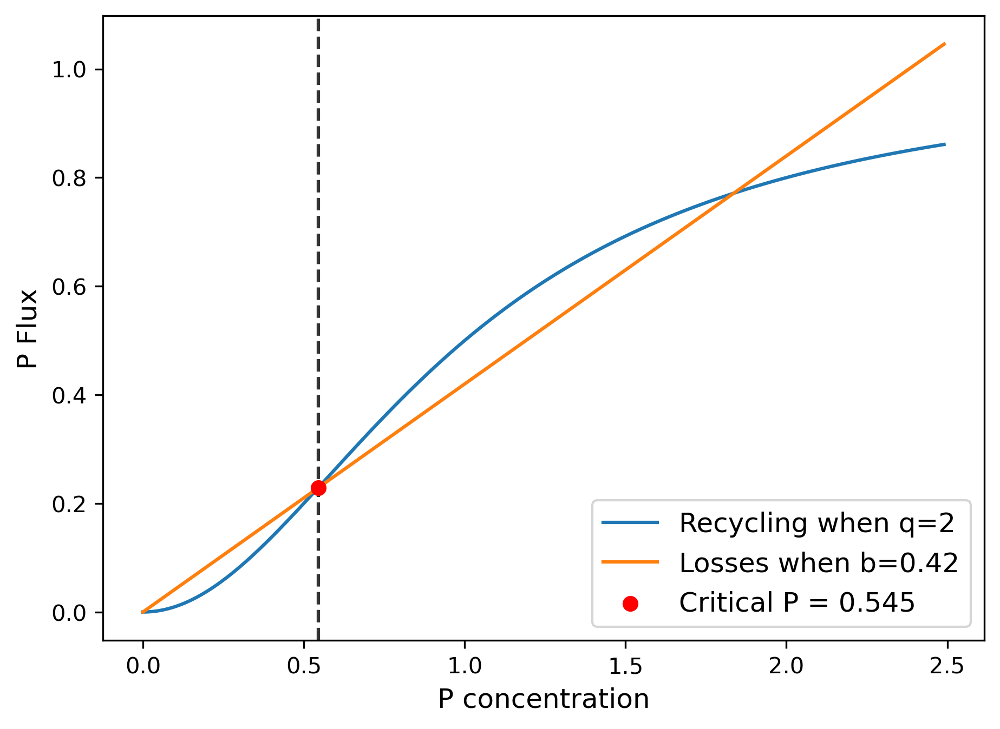
Pay attention to the gap between losses and recycling in this state of the world to the left of the unstable equilibrium.
When we do intertemporal optimization, we are considering anthropogenic releases between 0.01 and 0.1 at each time step. Crucially, we are considering the full sequence of those releases over 100 time steps. In the MOEA framework, the optimization considers a candidate sequence of 100 releases and tests this against each simulation of natural inflows (because this is stochastic). The optimization looks for the candidate sequences that do “best” on the expected value of the multiple objectives. Then, it continues searching based on the EA design.
Let’s take a closer look at the intertemporal strategies highlighted in the paper that are best on the reliability and benefits objectives, respecitvely.
Code
import scipy.stats as ss
# Intertemporal lake problem
# We set a seed for consistent results with the paper
# We pass in the 100 actions for the strategy
def LakeModel_IT(seed, actions):
# Set inflow distribution parameters
log_std = np.sqrt(np.log(1+sigma**2/mu**2))
log_mu = np.log(mu) - 0.5*(log_std**2)
# Initialize arrays to store P level in the lake at each time step
lake_state = np.zeros([nYears+1])
# Randomly generate nSamples of nYears of natural P inflows
natFlow = np.zeros([nYears])
np.random.seed(seed)
natFlow= np.exp(ss.norm.rvs(log_mu, log_std, nYears))
# Run lake model simulation
lake_state[0] = lake0
for i in range(nYears):
lake_state[i+1] = lake_state[i]*(1-b) + (lake_state[i]**q)/(1+(lake_state[i]**q)) + actions[i] + natFlow[i]
# Return natural inflows and actions as well
return (lake_state, natFlow, actions)
# Load the intertemporal results
# The rows are different strategies
# The first 100 columns are the actions
# The remaining columns are objective values, calculated
# as expected values over the simulated natural inflows
# The last column is the reliability objective
IT = np.loadtxt('./data/Intertemporal/Intertemporal.resultfile')
# The best reliability strategy minimizes the percentage of
# simulations within a SOW where we pass critical P
ITmostRel = np.argmin(IT[:,103])
# The best benefits strategy maximizes net present value
ITmostBen = np.argmin(IT[:,100])
years = np.arange(nYears + 1)
mostRel_states_all = []
mostBen_states_all = []
fig, ax = plt.subplots(figsize=(10, 6),
dpi=300)
for sim in range(nSamples):
IT_states_mostRel = LakeModel_IT(sim, IT[ITmostRel, 0:100])
IT_states_mostBen = LakeModel_IT(sim, IT[ITmostBen, 0:100])
mostRel_states_all.append(IT_states_mostRel[0])
mostBen_states_all.append(IT_states_mostBen[0])
# Plot total P time series with low alpha for clarity
ax.plot(years, IT_states_mostRel[0], color='tab:green', alpha=0.01)
ax.plot(years, IT_states_mostBen[0], color='tab:green', alpha=0.01)
# Plot mean total P for both strategies
ax.plot(years, np.array(mostRel_states_all).mean(axis=0), color='tab:green', lw=2, ls='-')
ax.plot(years, np.array(mostBen_states_all).mean(axis=0), color='tab:green', ls='--', lw=2)
# Plot actions (anthropogenic emissions) for both strategies
ax.plot(years[:-1], IT_states_mostRel[2], color='tab:blue', lw=2, ls='-')
ax.plot(years[:-1], IT_states_mostBen[2], color='tab:blue', lw=2, ls='--')
# Critical phosphorus concentration line
ax.axhline(p_crit, color='red', ls='-.', label='Critical P (threshold)')
# Labels and title
ax.set_xlabel('Year', size=12)
ax.set_ylabel('Phosphorus concentration / Emission flow', size=12)
ax.set_ylim([0, 1])
# Custom legend
from matplotlib.lines import Line2D
from matplotlib.patches import Patch
legend_elements = [Line2D([0], [0], color='gray', lw=2, ls='-', label='Best Reliability Strategy'),
Line2D([0], [0], color='gray', lw=2, ls='--', label='Best Benefits Strategy'),
Patch(facecolor='tab:blue', edgecolor='tab:blue',
label='Anthropogenic P'),
Patch(facecolor='tab:green', edgecolor='tab:green',
label='Total P'),
Line2D([0], [0], color='red', lw=2, ls='-.', label='Critical P'),]
ax.legend(handles=legend_elements,
loc='upper left',
fontsize='large')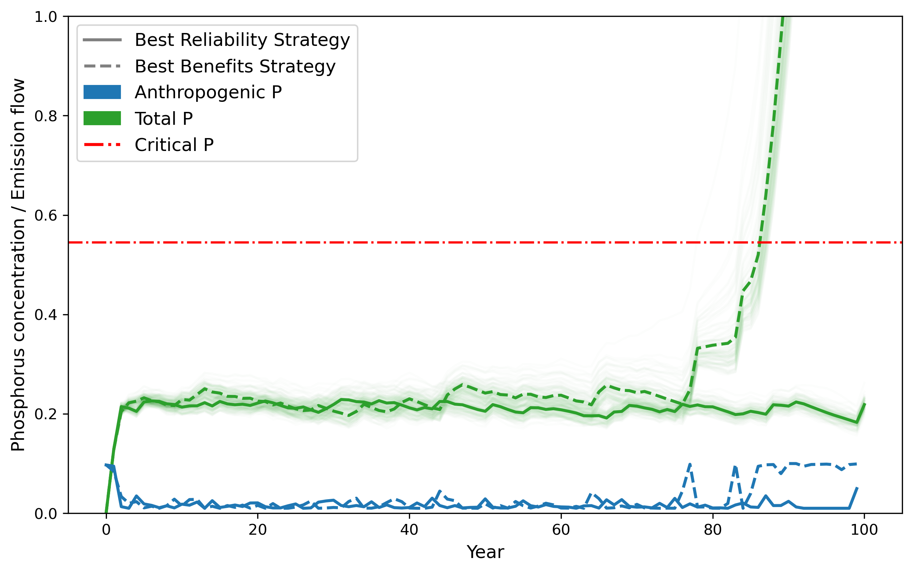
Note that in order to see the anthropogenic P lines, I clipped the upper y limit, which goes well above 1 for Total P in the best benefits strategy case!
Both strategies are assessed over identical natural P inflow realizations. What do you recognize about the different strategy behaviors?
As an exercise, add subplots the P Flux from the natural P recycling and losses for each strategy across each realization. What do you notice about how the best benefits strategy manages the non-linear dynamics past the critical P threshold? Check equations 6-9 in the paper, which describe the intertemporal optimizaton, and explain how mathematical formulation choices influence the dynamics of the best benefits strategy. (Hint: consider constraints and the time horizon).
Now, let’s take a look at the analagous policies the authors found with direct policy search. We’ll look at the state-action mappings from each as well as how that plays out over time.
To start, we’ll plot the best reliability and benefits strategies:
Code
import seaborn as sns
import pandas as pd
# Getting the actions from a given DPS parameterization
def DPSpolicy(lake_state, vars):
# Determine centers, radii and weights of RBFs
C = vars[0::3]
B = vars[1::3]
W = vars[2::3]
newW = np.zeros(len(W))
# Normalize weights to sum to 1
total = sum(W)
if total != 0.0:
for i in range(len(W)):
newW[i] = W[i]/total
else:
for i in range(len(W)):
newW[i] = 1/n
# Determine pollution emission decision, Y
Y = 0
for i in range(len(C)):
if B[i] != 0:
Y = Y + W[i]*((np.absolute(lake_state-C[i])/B[i])**3)
Y = min(0.1,max(Y,0.01))
return Y
# Load the intertemporal results
# The rows are different strategies
# The first 100 columns are the actions
# The remaining columns are objective values, calculated
# as expected values over the simulated natural inflows
# The last column is the reliability objective
DPS = np.loadtxt('./data/DPS/DPS.resultfile')
# The best reliability strategy minimizes the percentage of
# simulations within a SOW where we pass critical P
# There are only 6 decision variables so the
# reliability objective is in the 10th column (index 9)
DPSmostRel = np.argmin(DPS[:,9])
# The best benefits strategy maximizes net present value
DPSmostBen = np.argmin(DPS[:,6])
# Get the policy curves from the solutions
lake_states = np.arange(0, 2.5, 0.01)
rbf_list = []
for pol, var in zip(['Most Reliable', 'Most Benefits', 'Most Reliable (From Paper)'], [DPSmostRel, DPSmostBen, 26]):
rbf = pd.DataFrame()
rbf['Lake P'] = pd.Series(lake_states)
rbf['Anthropogenic P'] = rbf['Lake P'].apply(lambda x: DPSpolicy(x, DPS[var, 0:6]))
rbf['Strategy'] = pol
rbf_list.append(rbf)
rbfs = pd.concat(rbf_list, axis=0)
fig, ax = plt.subplots(figsize=(10, 5),
dpi=300)
sns.lineplot(data=rbfs, x='Lake P', y='Anthropogenic P', hue='Strategy', style='Strategy', ax=ax)
ax.set_xlim([0, 1])
ax.axvline(p_crit, color='red', ls='-.', lw=3, label='Critical P')
ax.legend(fontsize='large', loc='lower right')
ax.tick_params('both', labelsize=12)
ax.set_ylabel('Anthropogenic P', size=14)
ax.set_xlabel('Lake P', size=14)Text(0.5, 0, 'Lake P')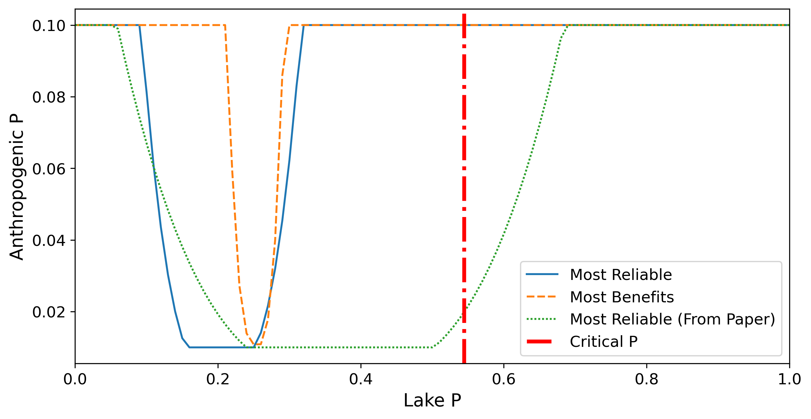
It turns out that many Pareto optimal strategies achieve the best reliability possible. We will consider an arbitrary strategy with the best reliability possible (blue) and the one used in the paper (green) for teaching purposes.
Let’s see what Lake P we take actions on based on a single stochastic realization of natural inflows with these various control policies. You can run this code with different seeds to see different results.
Code
def LakeModel_DPS_adapted(seed, vars):
log_std = np.sqrt(np.log(1 + sigma**2 / mu**2))
log_mu = np.log(mu) - 0.5*(log_std**2)
lake_state = np.zeros([nYears + 1])
np.random.seed(seed)
natFlow = np.exp(ss.norm.rvs(log_mu, log_std, nYears))
recycling = np.zeros(nYears) # Store recycling term at each step
loss = np.zeros(nYears) # Store loss term (B * X_t) at each step
lake_state[0] = lake0
Y = np.zeros(nYears)
Y[0] = DPSpolicy(lake_state[0], vars)
for i in range(nYears):
recycling[i] = (lake_state[i]**q) / (1 + (lake_state[i]**q))
loss[i] = lake_state[i] * b # assuming 'b' is the retention/loss factor
lake_state[i + 1] = lake_state[i] * (1 - b) + recycling[i] + Y[i] + natFlow[i]
if i < nYears - 1:
Y[i + 1] = DPSpolicy(lake_state[i + 1], vars)
# Return lake_state, natural inflows, emissions, recycling, and loss arrays
return lake_state, natFlow, Y, recycling, loss
seed = 100
lake_state_rel, natFlow_rel, Y_rel, recycling_rel, loss_rel = LakeModel_DPS_adapted(seed, DPS[DPSmostRel, 0:6])
lake_state_ben, natFlow_ben, Y_ben, recycling_ben, loss_ben = LakeModel_DPS_adapted(seed, DPS[DPSmostBen, 0:6])
lake_state_paper, natFlow_paper, Y_paper, recycling_paper, loss_paper = LakeModel_DPS_adapted(seed, DPS[26, 0:6])
policies = ['Most Reliable', 'Most Benefits', 'Most Reliable (From Paper)']
nat_flows = [natFlow_rel, natFlow_ben, natFlow_paper]
rec_flows = [recycling_rel, recycling_ben, recycling_paper]
loss_flows = [loss_rel, loss_ben, loss_paper]
emissions = [Y_rel, Y_ben, Y_paper]
lake_states_list = [lake_state_rel, lake_state_ben, lake_state_paper]
# Create figure with 3 columns and 3 rows: histograms above & below, curves in middle
height_ratios = [0.75, 1, 0.75] # lake P hist, policy curve, natural inflows hist
fig, axes = plt.subplots(3, 3, figsize=(8, 8), sharex='col', sharey='row',
gridspec_kw={'height_ratios': height_ratios, 'hspace': 0.1})
policies = ['Most Reliable', 'Most Benefits', 'Most Reliable (From Paper)']
# Top row: Lake P histograms (less tall)
for i, ax in enumerate(axes[0]):
sns.histplot(lake_states_list[i], binwidth=.1, color='tab:blue', alpha=0.7, ax=ax)
ax.set_title(f"{policies[i]}", fontsize=12)
ax.set_ylabel('Lake P Histogram')
ax.tick_params(axis='x', labelbottom=False) # hide x labels on top row
if i > 0:
ax.set_ylabel('')
# Middle row: Control policy curves (taller)
for i, ax in enumerate(axes[1]):
df = rbf_list[i]
sns.lineplot(data=df, x='Lake P', y='Anthropogenic P', color='tab:green', ax=ax)
ax.axvline(p_crit, color='red', linestyle='--', lw=2, label='Critical P')
ax.set_ylabel('Anthropogenic P')
ax.tick_params(axis='x', labelbottom=False)
ax.legend(fontsize=9, loc='lower right')
if i > 0:
ax.set_ylabel('')
# Bottom row: Natural inflows histograms (less tall)
for i, ax in enumerate(axes[2]):
sns.histplot(nat_flows[i] + rec_flows[i] + loss_flows[i], binwidth=.1, color='tab:orange', alpha=0.7, ax=ax)
ax.set_xlabel('P Concentration')
ax.set_ylabel('Non Anthropogenic P Histogram')
if i > 0:
ax.set_ylabel('')
plt.show()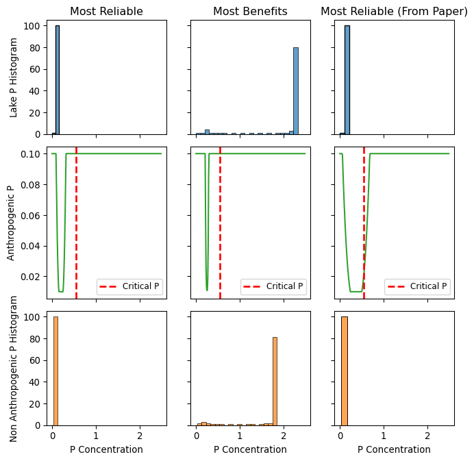
I intentionally chose a seed that leads to very high concentrations for the most benefits strategy. Check out a few other seeds. What seeds did you choose and do they produce the same patterns for each strategy?
Here’s an example with a different seed:
Code
seed = 42
lake_state_rel, natFlow_rel, Y_rel, recycling_rel, loss_rel = LakeModel_DPS_adapted(seed, DPS[DPSmostRel, 0:6])
lake_state_ben, natFlow_ben, Y_ben, recycling_ben, loss_ben = LakeModel_DPS_adapted(seed, DPS[DPSmostBen, 0:6])
lake_state_paper, natFlow_paper, Y_paper, recycling_paper, loss_paper = LakeModel_DPS_adapted(seed, DPS[26, 0:6])
policies = ['Most Reliable', 'Most Benefits', 'Most Reliable (From Paper)']
nat_flows = [natFlow_rel, natFlow_ben, natFlow_paper]
rec_flows = [recycling_rel, recycling_ben, recycling_paper]
loss_flows = [loss_rel, loss_ben, loss_paper]
emissions = [Y_rel, Y_ben, Y_paper]
lake_states_list = [lake_state_rel, lake_state_ben, lake_state_paper]
# Create figure with 3 columns and 3 rows: histograms above & below, curves in middle
height_ratios = [0.75, 1, 0.75] # lake P hist, policy curve, natural inflows hist
fig, axes = plt.subplots(3, 3, figsize=(8, 8), sharex='col', sharey='row',
gridspec_kw={'height_ratios': height_ratios, 'hspace': 0.1})
policies = ['Most Reliable', 'Most Benefits', 'Most Reliable (From Paper)']
# Top row: Lake P histograms (less tall)
for i, ax in enumerate(axes[0]):
sns.histplot(lake_states_list[i], binwidth=.1, color='tab:blue', alpha=0.7, ax=ax)
ax.set_title(f"{policies[i]}", fontsize=12)
ax.set_ylabel('Lake P Histogram')
ax.tick_params(axis='x', labelbottom=False) # hide x labels on top row
if i > 0:
ax.set_ylabel('')
# Middle row: Control policy curves (taller)
for i, ax in enumerate(axes[1]):
df = rbf_list[i]
sns.lineplot(data=df, x='Lake P', y='Anthropogenic P', color='tab:green', ax=ax)
ax.axvline(p_crit, color='red', linestyle='--', lw=2, label='Critical P')
ax.set_ylabel('Anthropogenic P')
ax.tick_params(axis='x', labelbottom=False)
ax.legend(fontsize=9, loc='lower right')
if i > 0:
ax.set_ylabel('')
# Bottom row: Natural inflows histograms (less tall)
for i, ax in enumerate(axes[2]):
sns.histplot(nat_flows[i] + rec_flows[i] + loss_flows[i], binwidth=.1, color='tab:orange', alpha=0.7, ax=ax)
ax.set_xlabel('P Concentration')
ax.set_ylabel('Non Anthropogenic P Histogram')
if i > 0:
ax.set_ylabel('')
plt.show()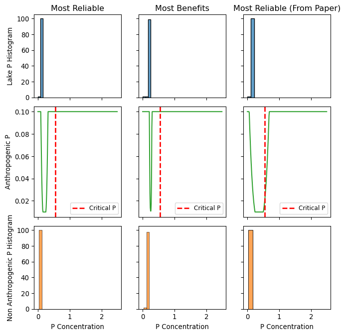
What do you see about the distribution of all observed P concentrations across the realizations you evaluated of both naturally (inflows, recycling, loss summed on bottom row) and including the anthropogenic P concentration (top row)?
Now, let’s look across many stochastic realizations.
Code
seed = 100
lake_state_rel, natFlow_rel, Y_rel, recycling_rel, loss_rel = LakeModel_DPS_adapted(seed, DPS[DPSmostRel, 0:6])
lake_state_ben, natFlow_ben, Y_ben, recycling_ben, loss_ben = LakeModel_DPS_adapted(seed, DPS[DPSmostBen, 0:6])
lake_state_paper, natFlow_paper, Y_paper, recycling_paper, loss_paper = LakeModel_DPS_adapted(seed, DPS[26, 0:6])
policies = ['Most Reliable', 'Most Benefits', 'Most Reliable (From Paper)']
nat_flows = [natFlow_rel, natFlow_ben, natFlow_paper]
rec_flows = [recycling_rel, recycling_ben, recycling_paper]
loss_flows = [loss_rel, loss_ben, loss_paper]
emissions = [Y_rel, Y_ben, Y_paper]
lake_states_list = [lake_state_rel, lake_state_ben, lake_state_paper]
# Create figure with 3 columns and 3 rows: histograms above & below, curves in middle
height_ratios = [0.75, 1, 0.75] # lake P hist, policy curve, natural inflows hist
fig, axes = plt.subplots(3, 3, figsize=(8, 8), sharex='col', sharey='row',
gridspec_kw={'height_ratios': height_ratios, 'hspace': 0.1})
policies = ['Most Reliable', 'Most Benefits', 'Most Reliable (From Paper)']
# Top row: Lake P histograms (over all runs) - log scale y-axis
for i, ax in enumerate(axes[0]):
sns.histplot(lake_states_list[i], binwidth=.1, color='tab:blue', alpha=0.7, ax=ax)
ax.set_yscale('log')
ax.set_title(f"{policies[i]}", fontsize=12)
ax.set_ylabel('Lake P Histogram')
ax.set_xlim([0, 1])
ax.tick_params(axis='x', labelbottom=False)
if i > 0:
ax.set_ylabel('')
# Middle row: Control policy curves (taller)
for i, ax in enumerate(axes[1]):
df = rbf_list[i]
sns.lineplot(data=df, x='Lake P', y='Anthropogenic P', color='tab:green', ax=ax)
ax.axvline(p_crit, color='red', linestyle='--', lw=2, label='Critical P')
ax.set_ylabel('Anthropogenic P')
ax.tick_params(axis='x', labelbottom=False)
ax.legend(fontsize=9, loc='lower right')
if i > 0:
ax.set_ylabel('')
# Bottom row: Natural inflows histograms (less tall)
for i, ax in enumerate(axes[2]):
combined = nat_flows[i] + rec_flows[i] + loss_flows[i]
sns.histplot(combined, binwidth=.1, color='tab:orange', alpha=0.7, ax=ax)
ax.set_yscale('log')
ax.set_xlabel('P Concentration')
ax.set_ylabel('Non Anthropogenic P Histogram')
ax.set_xlim([0, 1])
if i > 0:
ax.set_ylabel('')
plt.show()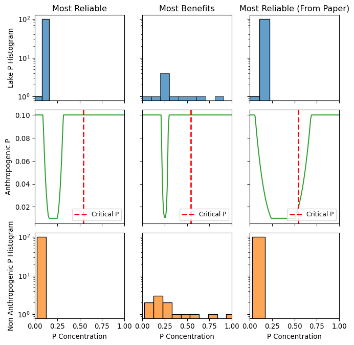
What do you see about the distribution of all observed P concentrations across all the realizations of both naturally (inflows, recycling, loss summed on bottom row) and including the anthropogenic P concentration (top row)?
Let’s take a look at these P concentrations across all of these states. Each realization can have a different anthropogenic P sequence, so we’re not going to plot exactly the same way we did for the intertemporal.
Code
policy_names = ['Most Reliable', 'Most Benefits', 'Most Reliable (From Paper)']
policy_indices = [DPSmostRel, DPSmostBen, 26]
# Preallocate storage for states for all simulations and policies
nSamples = 100 # your number of Monte Carlo simulations
nYears = 100 # length of simulation
years = np.arange(nYears + 1)
totalP_all = {name: [] for name in policy_names}
anthP_all = {name: [] for name in policy_names}
natP_all = {name: [] for name in policy_names}
recP_all = {name: [] for name in policy_names}
lossP_all = {name: [] for name in policy_names}
# Run all simulations for each policy
for sim in range(nSamples):
for name, idx in zip(policy_names, policy_indices):
lake_state, natFlow, actions, recs, losses = LakeModel_DPS_adapted(sim + 1000, DPS[idx, 0:6])
# collect total phosphorus time series (index 0 of returned tuple)
totalP_all[name].append(lake_state)
# collect anthro P time series
anthP_all[name].append(actions)
# collect the rest
natP_all[name].append(natFlow)
recP_all[name].append(recs)
lossP_all[name].append(losses)
# Plotting setup
fig, ax = plt.subplots(figsize=(12, 7), dpi=300)
colors = {'Most Reliable': 'tab:green',
'Most Benefits': 'tab:orange',
'Most Reliable (From Paper)': 'tab:purple'}
linestyles = {'Most Reliable': '-',
'Most Benefits': '--',
'Most Reliable (From Paper)': '-.'}
# Plot individual simulation total P flows with very low alpha
for name in policy_names:
for run in totalP_all[name]:
ax.plot(years, run, color=colors[name], alpha=0.05)
# Plot mean total P time series for each policy
for name in policy_names:
mean_totalP = np.mean(totalP_all[name], axis=0)
ax.plot(years, mean_totalP, color=colors[name], lw=2, linestyle=linestyles[name], label=f'{name} Mean Total P')
# Plot critical phosphorus concentration line
ax.axhline(p_crit, color='red', linestyle='-.', lw=2, label='Critical P (threshold)')
# Labels and limits
ax.set_xlabel('Year', fontsize=12)
ax.set_ylabel('Phosphorus concentration / Emission flow', fontsize=12)
ax.set_ylim([0, 1])
# Construct a clear custom legend
legend_elements = [
Line2D([0], [0], color=colors['Most Reliable'], lw=2, ls=linestyles['Most Reliable'], label='Most Reliable Mean Total P'),
Line2D([0], [0], color=colors['Most Benefits'], lw=2, ls=linestyles['Most Benefits'], label='Most Benefits Mean Total P'),
Line2D([0], [0], color=colors['Most Reliable (From Paper)'], lw=2, ls=linestyles['Most Reliable (From Paper)'], label='Most Reliable (From Paper) Mean Total P'),
Line2D([0], [0], color='red', lw=2, ls='-.', label='Critical P (threshold)')
]
ax.legend(handles=legend_elements, loc='upper right', fontsize='large')
plt.title('Lake Phosphorus Concentrations and Emissions Across DPS Policies', fontsize=14)
plt.show()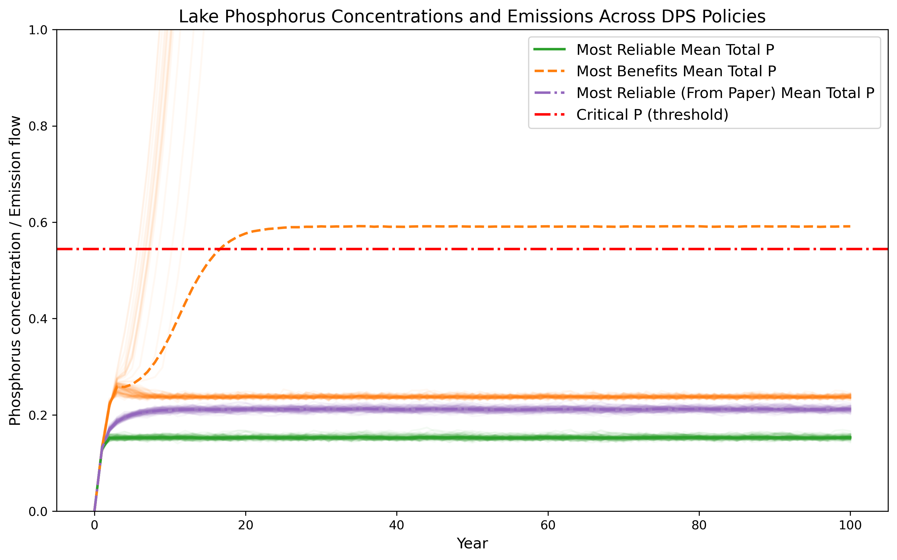
How would you characterize the behavior of the different strategies? Is the mean P a good way to characterize the strategies’ dynamics?
Let’s take a closer look at those realizations where the max benefit policy leads to eutrophication.
Code
from matplotlib.gridspec import GridSpec
temp = pd.DataFrame(totalP_all['Most Benefits'])
# Runs that exceed critical P
eutrophic_runs_idx = temp[(temp > p_crit).sum(axis=1) > 0].index
non_eutrophic_runs_idx = temp[(temp > p_crit).sum(axis=1) == 0].index
# Extract the eutrophic realizations data
totalP_eutrophic = [totalP_all['Most Benefits'][i] for i in eutrophic_runs_idx]
anthP_eutrophic = [anthP_all['Most Benefits'][i] for i in eutrophic_runs_idx]
natFlow_eutrophic = [natP_all['Most Benefits'][i] for i in eutrophic_runs_idx]
recycling_eutrophic = [recP_all['Most Benefits'][i] for i in eutrophic_runs_idx]
loss_eutrophic = [lossP_all['Most Benefits'][i] for i in eutrophic_runs_idx]
# And non eutrophic
totalP_non_eutrophic = [totalP_all['Most Benefits'][i] for i in non_eutrophic_runs_idx]
anthP_non_eutrophic = [anthP_all['Most Benefits'][i] for i in non_eutrophic_runs_idx]
natFlow_non_eutrophic = [natP_all['Most Benefits'][i] for i in non_eutrophic_runs_idx]
recycling_non_eutrophic = [recP_all['Most Benefits'][i] for i in non_eutrophic_runs_idx]
loss_non_eutrophic = [lossP_all['Most Benefits'][i] for i in non_eutrophic_runs_idx]
years = np.arange(len(totalP_eutrophic[0]))
# Net recycling/loss:
net_recycling_eutrophic = [r - l for r, l in zip(recycling_eutrophic, loss_eutrophic)]
net_recycling_non_eutrophic = [r - l for r, l in zip(recycling_non_eutrophic, loss_non_eutrophic)]
# Combine and create figure
fig = plt.figure(figsize=(10, 8), dpi=300)
gs = GridSpec(nrows=2, ncols=2, figure=fig, width_ratios=[1, 1], wspace=0.1, hspace=0.25,
height_ratios=[.3, 1])
# --- Top panel: RBF control policies ---
ax0 = fig.add_subplot(gs[0, :])
sns.lineplot(data=rbfs[rbfs['Strategy'] == 'Most Benefits'], x='Lake P', y='Anthropogenic P', hue='Strategy', style='Strategy', ax=ax0)
ax0.axvline(p_crit, color='red', linestyle='-.', lw=3, label='Critical P')
ax0.set_title('RBF Control Policy - Most Benefits', size=14)
ax0.set_ylabel('Anthropogenic P')
ax0.set_xlabel('')
ax0.set_xlim([0, .6])
ax0.legend(fontsize='medium')
# --- Bottom panel, Left: Dynamics of eutrophic runs ---
ax10 = fig.add_subplot(gs[1, 0])
for i in range(len(eutrophic_runs_idx)):
# Plot each realization with low alpha for clarity:
ax10.plot(years, totalP_eutrophic[i], color='tab:orange', alpha=0.1)
ax10.plot(years[:-1], anthP_eutrophic[i], color='tab:blue', alpha=0.1)
ax10.plot(years[:-1], natFlow_eutrophic[i], color='tab:green', alpha=0.1)
ax10.plot(years[:-1], net_recycling_eutrophic[i], color='tab:red', alpha=0.1)
# Bottom panel, right: dynamics of non eutrophic runs
ax11 = fig.add_subplot(gs[1, 1])
for i in range(len(eutrophic_runs_idx)):
# Plot each realization with low alpha for clarity:
ax11.plot(years, totalP_non_eutrophic[i], color='tab:orange', alpha=0.1)
ax11.plot(years[:-1], anthP_non_eutrophic[i], color='tab:blue', alpha=0.1)
ax11.plot(years[:-1], natFlow_non_eutrophic[i], color='tab:green', alpha=0.1)
ax11.plot(years[:-1], net_recycling_non_eutrophic[i], color='tab:red', alpha=0.1)
ax10.axhline(p_crit, color='black', linestyle='--', label='Critical P')
ax10.set_xlabel('Year')
ax10.set_ylabel('P concentration / flux')
ax10.set_title('Eutrophic Realizations')
ax10.set_xlim(0, 20)
ax10.set_ylim([-.1, .6])
ax11.plot(years, np.mean(totalP_non_eutrophic, axis=0), color='tab:orange', lw=2, label='Mean Total P')
ax11.plot(years[:-1], np.mean(anthP_non_eutrophic, axis=0), color='tab:blue', lw=2, label='Mean Anthropogenic P')
ax11.plot(years[:-1], np.mean(natFlow_non_eutrophic, axis=0), color='tab:green', lw=2, label='Mean Natural Inflow')
ax11.plot(years[:-1], np.mean(net_recycling_non_eutrophic, axis=0), color='tab:red', lw=2, label='Mean Net Recycling/Loss')
ax11.axhline(p_crit, color='black', linestyle='--', label='Critical P')
ax11.set_xlabel('Year')
ax11.set_ylabel('')
ax11.set_title('Non-Eutrophic Realizations')
ax11.legend(fontsize='medium')
ax11.set_xlim(0, 20)
ax11.set_ylim([-.1, .6])
plt.tight_layout()
plt.show()/var/folders/d2/g0h08s551zb2hz_ws2g4ggh400hbd0/T/ipykernel_30027/1823386331.py:82: UserWarning: This figure includes Axes that are not compatible with tight_layout, so results might be incorrect.
plt.tight_layout()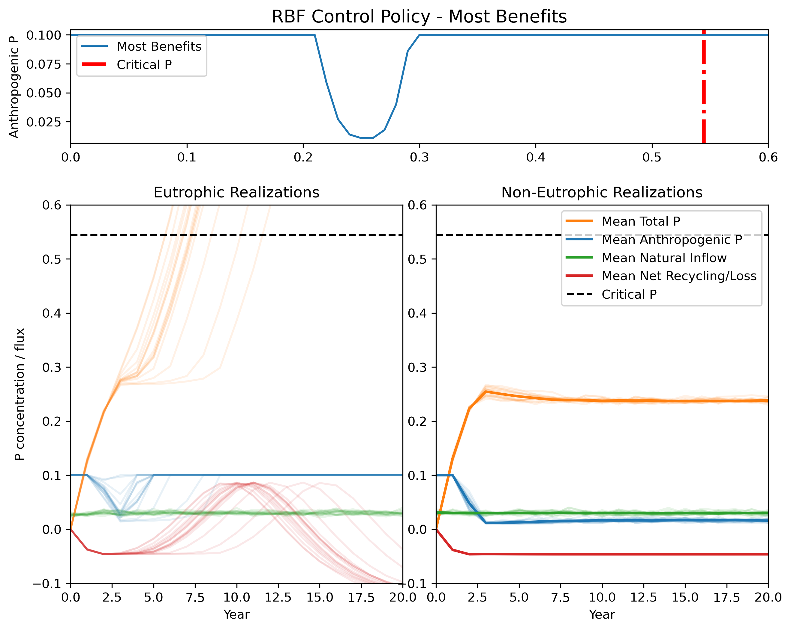
Can you see what the difference is between the eutrophic and non-eutrophic realizations? Recall that these are using the exact same control policies. Let’s try zooming in even more on the early years of the problem and focus on the total P trajectories, along with our RBF and where it tells us to emit less. Recall that in our optimization formulation, we set .01 as our minimum allowable emission.
Code
# Combine and create figure
fig = plt.figure(figsize=(10, 8), dpi=300)
gs = GridSpec(nrows=2, ncols=2, figure=fig, width_ratios=[1, 1], wspace=0.1, hspace=0.25,
height_ratios=[.3, 1])
# --- Top panel: RBF control policies ---
ax0 = fig.add_subplot(gs[0, :])
sns.lineplot(data=rbfs[rbfs['Strategy'] == 'Most Benefits'], x='Lake P', y='Anthropogenic P', hue='Strategy', style='Strategy', ax=ax0)
ax0.set_title('RBF Control Policy - Most Benefits', size=14)
ax0.set_ylabel('Anthropogenic P')
ax0.set_xlabel('')
ax0.set_xlim([.20, .32])
ax0.legend(fontsize='medium')
# --- Bottom panel, Left: Dynamics of eutrophic runs ---
ax10 = fig.add_subplot(gs[1, 0])
for i in range(len(eutrophic_runs_idx)):
# Plot each realization with low alpha for clarity:
ax10.plot(years, totalP_eutrophic[i], color='tab:orange', alpha=0.1)
ax10.plot(years[:-1], anthP_eutrophic[i], color='tab:blue', alpha=0.1)
ax10.plot(years[:-1], natFlow_eutrophic[i], color='tab:green', alpha=0.1)
ax10.plot(years[:-1], net_recycling_eutrophic[i], color='tab:red', alpha=0.1)
# Bottom panel, right: dynamics of non eutrophic runs
ax11 = fig.add_subplot(gs[1, 1])
for i in range(len(eutrophic_runs_idx)):
# Plot each realization with low alpha for clarity:
ax11.plot(years, totalP_non_eutrophic[i], color='tab:orange', alpha=0.1)
ax11.plot(years[:-1], anthP_non_eutrophic[i], color='tab:blue', alpha=0.1)
ax11.plot(years[:-1], natFlow_non_eutrophic[i], color='tab:green', alpha=0.1)
ax11.plot(years[:-1], net_recycling_non_eutrophic[i], color='tab:red', alpha=0.1)
ax10.axhline(p_crit, color='black', linestyle='--', label='Critical P')
ax10.set_xlabel('Year')
ax10.set_ylabel('P concentration')
ax10.set_title('Eutrophic Realizations')
ax10.set_xlim(0, 5)
ax10.set_ylim([.20, .32])
ax11.plot(years, np.mean(totalP_non_eutrophic, axis=0), color='tab:orange', lw=2, label='Mean Total P')
ax11.set_xlabel('Year')
ax11.set_ylabel('')
ax11.set_title('Non-Eutrophic Realizations')
ax11.legend(fontsize='medium')
ax11.set_xlim(0, 5)
ax11.set_ylim([.20, .32])
ax11.tick_params(left=False, labelleft=False)
ax11.fill_between([0, 5], .24, .27, color='gray', alpha=.1)
ax10.fill_between([0, 5], .24, .27, color='gray', alpha=.1)
ax0.fill_between([.24, .27], 0, .1, color='gray', alpha=.1)
plt.tight_layout()
plt.show()/var/folders/d2/g0h08s551zb2hz_ws2g4ggh400hbd0/T/ipykernel_30027/1156415406.py:54: UserWarning: This figure includes Axes that are not compatible with tight_layout, so results might be incorrect.
plt.tight_layout()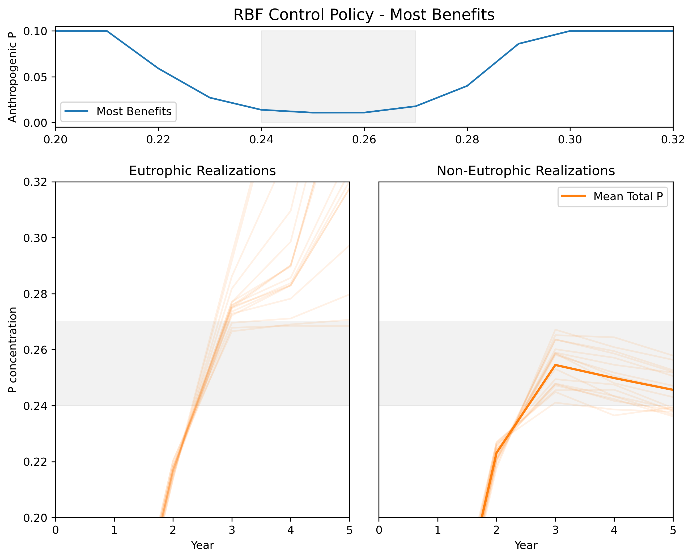
We can roughly highlight a region of P concentration at year 3 where the eutrophic and non-eutrophic realizations begin to look different from one another. The non-eutrophic realizations do not cross .27 in year 3, but many of the eutrophic realizations do.
Let’s revisit our P recycling and loss plot and zoom in on the area below the threshold. We’ll add a shaded area to indicate the mean natural P inflow so that we can get a better sense for what P concentrations are dangerous.
Code
fig, ax = plt.subplots(dpi=300)
ax.plot(xs, R, label="Recycling when q={}".format(q), color="C0")
ax.plot(xs, L, label="Losses when b={}".format(b), color="C1")
ax.fill_between(xs, R, [r + .03 for r in R], label='Recycling + Mean P inflow (.03)', color='gray', alpha=.25)
ax.fill_between(xs, [r + .03 for r in R], [r + .04 for r in R], label='"" + small emission (.01)', color='green', alpha=.25)
ax.axvline(p_crit, color="k", linestyle="--", alpha=0.8)
ax.scatter([p_crit], [recycling(p_crit)], color="red", zorder=5, label=f"Critical P = {p_crit:.3f}")
ax.set_xlabel("P concentration", size=12)
ax.set_ylabel("P Flux", size=12)
ax.set_xlim([0, .55])
ax.set_ylim([0, .25])
ax.legend(fontsize='large')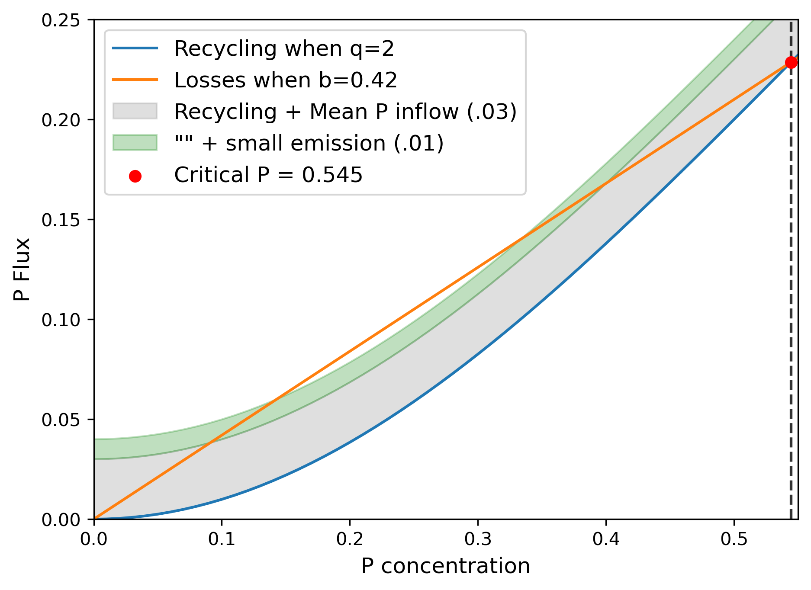
This plot suggests that even at relatively low P concentrations, the net P loss that occurs below the critical P threshold might be too low to support anthropogenic emissions that help us do well on our economic objective. For example, in between around .18 and .3, we see a very small margin of net loss. In some realizations, we might get unlucky and the variance in the natural P inflow will push us into net P gains at relatively low P concentrations. These P concentrations correspond to high emission actions for our max benefits policy, quickly taking us over the critical P threshold.
Not that in the previous plot, the eutrophic realizations that were below .27 never lose enough P to avoid crossing the threshold (because we set our min P to .01). The interaction of emitting at least .01, along with the very small net loss at P concentrations at around .27 mean that a year with a large positive natural P (due to the variance) will be on its way to the critical P threshold with no turning back. Instead of a small emission, let’s look at the same plot in terms of our max benefits and tw0 reliability policies.
Code
fig, ax = plt.subplots(nrows=3, dpi=300, figsize=(8, 12), sharex=True)
for i, s_group in enumerate(rbfs.groupby(['Strategy'])):
ax[i].plot(xs, R, label="Recycling when q={}".format(q), color="C0")
ax[i].plot(xs, L, label="Losses when b={}".format(b), color="C1")
ax[i].fill_between(xs, R, [r + .03 for r in R], label='Recycling + Mean inflow', color='gray', alpha=.25)
ax[i].fill_between(xs, [r + .03 for r in R], s_group[1]['Anthropogenic P'].values + np.array(R), label='"" + Anthropogenic', color='green', alpha=.25)
ax[i].axvline(p_crit, color="k", linestyle="--", alpha=0.8)
ax[i].scatter([p_crit], [recycling(p_crit)], color="red", zorder=5, label=f"Critical P = {p_crit:.3f}")
ax[i].set_ylabel("P Flux", size=12)
ax[i].set_xlim([0, .55])
ax[i].set_ylim([0, .25])
ax[i].tick_params('both', labelsize=12)
ax[i].set_title(s_group[0][0] + " Strategy", size=12)
if i == 0:
ax[i].legend(fontsize='large', frameon=False)
if i == 2:
ax[i].set_xlabel("P concentration", size=12)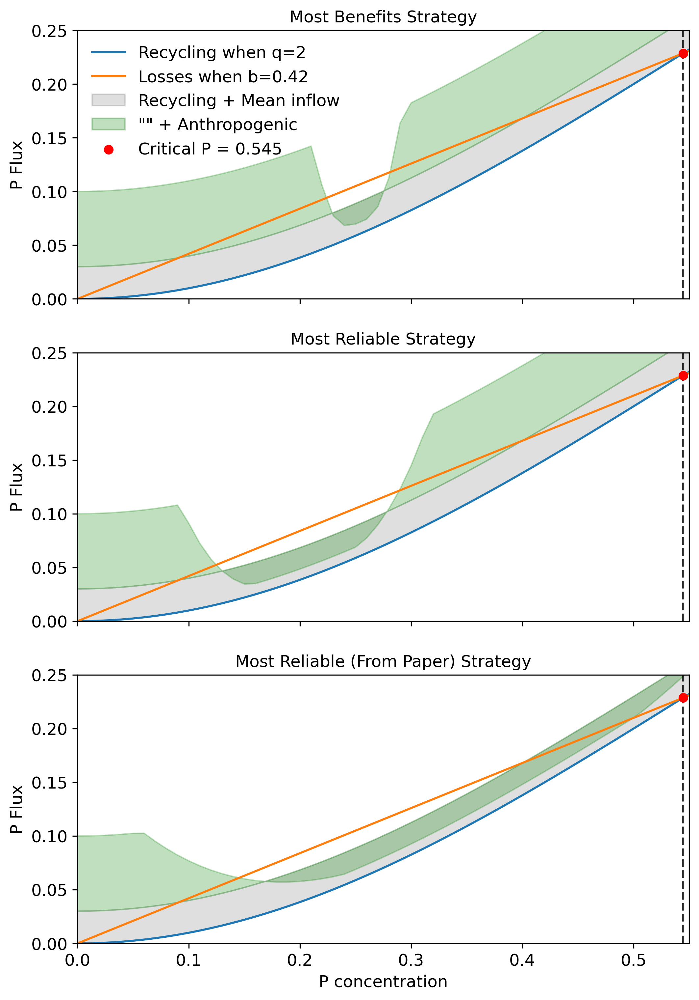
Note the P concentration where the most benefits strategy contributes its lowest emission. Do the non-eutrophic realizations ever cross this point?
Wrapping up lab
In today’s lab, we scrutinized different strategies from the open loop and closed loop optimization approaches for how they manage the tipping point dynamics. To wrap up your lab, please include the following analysis and any visualizations that help you summarize your findings:
Calculate performance metrics for the different strategies we reviewed (both the open loop and closed loop) over time across realizations.
Calculate the robustness of the most benefits and most reliable strategies from the different optimization approaches to different SOWs using the same metric as in the paper. I encourage you to check the repository and to reproduce figure 8. Do it for intertemporal most reliability and most benefits. Then do it for closed loop most reliability (you can use either one we looked at - please be explicit) and most benefits.
Considering your analysis from #1, our attention to dynamics in lab, and the results in Figure 11 in the paper, explain why the different optimization approaches (i.e., open vs. closed loop) lead to different robustness results.
Considering #3, what would you consider for updating the policy search approach to improve robustness while still performing well on key objectives in the reference scenario?
Discuss the role that dynamic planning and closed loop optimization can play in your decision analysis.
Please submit your lab report to me as a pdf. Please include a link to your GitHub repository.